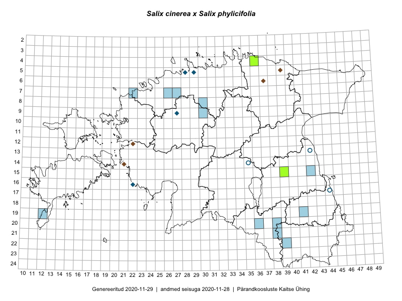

Salix cinerea × Salix phylicifolia — tuhkur paju × kahevärviline paju
Salicaceae :: Salix cinerea × Salix phylicifolia (11)

Kaart põhineb 30 kirjel:
vaatlusi 1
herbaareksemplare 10
ELFi kirjeid1 19
Taime kaasaegsed ja ajaloolised leiukohad asuvad 25 ruudus.
Tingmärgid ja leidudega ruutude arvud periooditi uues (u) ja 2005 andmestikus (v)
| █ | vahemik | u2 | v3 |
|---|---|---|---|
| █ | 2006–2020 | 14 | – |
| ◆/◇ | 1971–2005 | 8 | 0 |
| ○ | 1921–1970 | 3 | 0 |
| + | kuni 1920 | 0 | 0 |
| × | hävinud | – | 0 |
| ? | kaheldav | – | 0 |
| Ruut | Leidja(d) | Leiuaeg | Kirje |
|---|---|---|---|
| 15-39 | Karin Kaljund, Kaire Lanno | 2016-07-19 | TAA0144327: Salix cinerea × Salix phylicifolia |
| 07-27 | Riina Martverk, Eerik Leibak | 2013-08-07 | ELF: 24029 |
| 07-26;07-27 | Katrin Kivioja, Ants Animägi | 2013-08-07 | ELF: 257 |
| 07-22 | Kaupo Kohv | 2010-10-30 | ELF: 20019 |
| 07-22 | Kaupo Kohv | 2010-10-30 | ELF: 20020 |
| 15-42 | Kaupo Kohv | 2010-09-25 | ELF: 19986 |
| 22-39 | Toomas Kukk, Eerik Leibak | 2010-09-21 | ELF: 19929 |
| 19-41 | Liina Remm | 2010-09-04 | ELF: 17213 |
| 20-36 | Riinu Ots | 2010-08-17 | ELF: 20133 |
| 19-12 | Eerik Leibak | 2010-08-17 | ELF: 16859 |
| 09-30 | Toivo Sepp | 2010-08-16 | ELF: 20480 |
| 08-30 | Silver Sisask, Robert Laanpere | 2010-08-04 | ELF: 22893 |
| 21-38 | Karin Kikas | 2009-09-01 | ELF: 10025 |
| 20-38 | Eerik Leibak | 2009-08-12 | ELF: 12831 |
| 04-36 | Triin Tekko, Eleriin Tekko | 2009-08-01 | ELF: 13799 |
| 04-36 | Triin Tekko | 2009-08-01 | TAA0112683: Salix cinerea × Salix phylicifolia |
| 05-28 | Heinrich Aasamaa | 2000-09-22 | TAM0130737: Salix cinerea × Salix phylicifolia |
| 05-29 | Heinrich Aasamaa | 1999-11-01 | TAM0130735: Salix cinerea × Salix phylicifolia |
| 09-27 | Heinrich Aasamaa | 1999-10-07 | TAM0130664: Salix cinerea × Salix phylicifolia |
| 06-37 | Mare Leis, Lauri Lutsar | 1997-08-27 | ELF: 805 |
| 16-22 | Toomas Kukk, Toomas Trapido | 1995-08-28 | ELF: 6453 |
| 16-22 | Toomas Kukk | 1995-08-28 | ruut/ala: Salix cinerea × Salix phylicifolia |
| 12-22 | Toomas Kukk, Kalevi Kull, Toomas Trapido | 1995-06-22 | ELF: 6359 |
| 14-21 | Toomas Kukk, Toomas Trapido | 1995-06-21 | ELF: 6355 |
| 05-39 | Tõnu Ploompuu | 1994-08-05 | ELF: 968 |
| 05-29 | Heinrich Aasamaa | 1991-09-02 | TAM0130736: Salix cinerea × Salix phylicifolia |
| 17-44 | Linda Viljasoo | 1959-10-03 | TAA0098556: Salix cinerea × Salix phylicifolia |
| 13-42 | H. Karu, Linda Viljasoo | 1958-10-23 | TAA0098558: Salix cinerea × Salix phylicifolia |
| 17-44 | Heljo Krall | 1958-05-23 | TAA0098557: Salix cinerea × Salix phylicifolia |
| 14-35 | K. Pork | 1956-05-11 | TAA0098555: Salix cinerea × Salix phylicifolia |
Eestimaa Looduse Fondi (ELF) andmebaas sisaldab inventeeritud koosluste kirjeldusi ja liigiloendeid. Eriti rohkesti on andmeid märgalade kohta.↩︎
Ruutude arv uue atlase andmekogu järgi. Muuhulgas arvestab vanemat herbaariumi, 2005. aasta atlase välitöölehtedelt uuesti digitaliseeritud andmeid jne. Uue atlase andmekogust pärinevad andmed on kaardile kantud siniste sümbolitega.↩︎
Ruutude arv 2005. aasta atlase (Kukk, T., Kull, T., Eesti taimede levikuatlas. Eesti Maaülikool, Põllumajandus- ja Keskkonnainstituut, Tartu, 2005) järgi. Andmeallikana on kasutatud levik.exe programmi, kus igas ruudus on registreeritud vaid uusim leid. Seetõttu on vanemate perioodide kohta andmed puudulikud. Kasutatud levik.exe andmestikus leidub mõningaid kõrvalekaldeid atlase trükis ilmunud versioonist, sagedamini tarnade ja käpaliste seas. Lisaks leidub selles andmestikus valik liike (peamiselt väheste leidudega tulnuktaimed), mille kaarte trükis ei avaldatud. Vana atlase andmed ruutudest, milles ei ole uue atlase andmekogus leide enne 2006. aastat, on kaardil esitatud punaste sümbolitega. Vana atlase andmetel hävinud ja kaheldavaid leiukohti pole hilisemate (taas)leidude põhjal korrigeeritud.↩︎